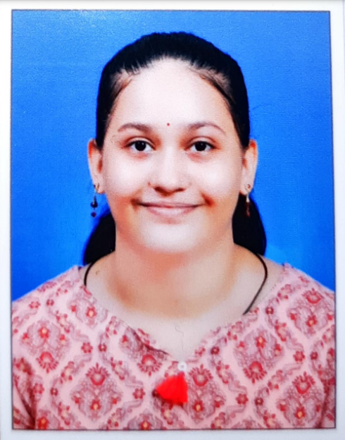

Janhavi Vaishampayan

Technical Skills:
- Basic: HTML, CSS, Java, R
- Intermediate: SQL
- Skilled: Python
Education:
- HSC: Gogate Jogalekar College, Ratnagiri|Percentage: 94.17%|2020-2021
- BSc: Gogate Jogaekar College, Ratnagiri|CGPA: 9.88|2021-2024
- MSc: Currently studying at Fergusson College, Pune|Sem I CGPA: 10|2024-2026
Projects:
- The Optical Character Recognition System preserves and makes historical English and
Marathi documents accessible by converting scanned images, audio files, and PDFs
into searchable, editable digital formats.
- It uses PyTesseract for OCR and PDF parsing, Whisper library of Open AI for speech-
to-text conversion and MySQL for maintaining a Database for the cross-referencing
- The Key factors of the project are:
- Digitize Archival documents: convert images, and audio to readable text format.
- Implement automated document summarization.
- Cross-reference topics: allow users to access and compare topics from different books effectively. (Organised Database).
- Developing tools (front-end dictionary format) for native Indian languages.
Achievements:
- 1st rank in Arohan Poster presentation competition.
- Participated in AI-GATI Hackethon.